Earth
Multiple distortions from idealized sphere:
-Topography
-Gravity Differentials
-Centrifugal Force
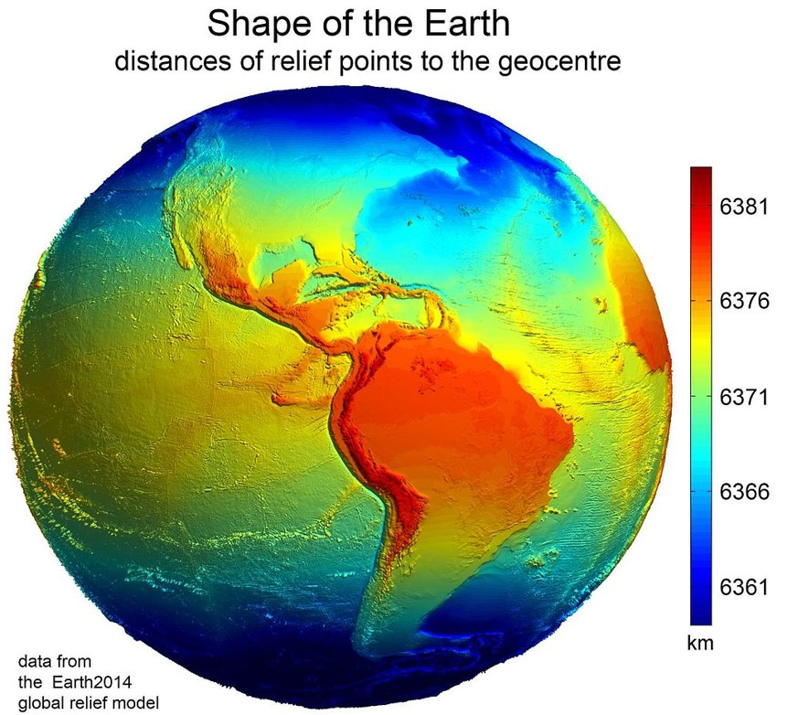
Ignore Topography!?
In most applications, topography isn't explicitly needed.
- We can account for it separately if necessary using digital elevation models or contour lines.
Digital Elevation Model
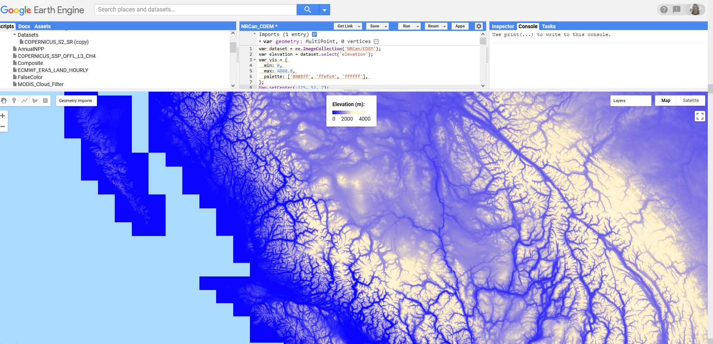
Contour Lines

Geoid
Simplification of Earth:
-Smooths topography
-Gravity differences measured by satellites
-Differences in surface heights (180 m)
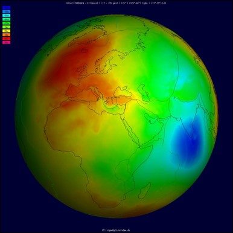
The Oblate Spheroid
A close approximation of Earth's shape
-Topography
-Gravity Differentials
-Centrifugal Force

A Datum
A system to link the oblate spheroid to the geoid
-Connect the coordinates to the earth’s surface
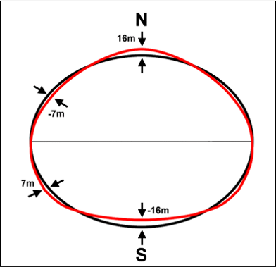
Local Datum
Fits geoid very well in a particular region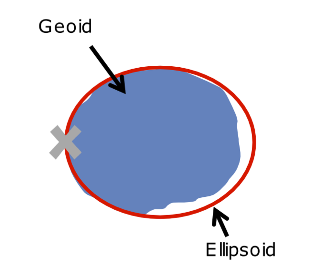
Global Datum
Fits the geoid fairly well everywhere
Local Datum
Fits geoid very well in a particular region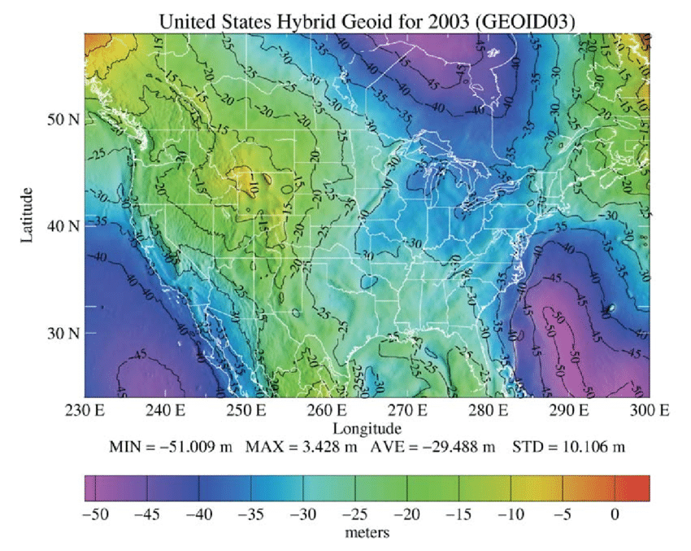
Global Datum
Fits the geoid fairly well everywhere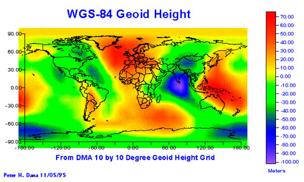
Only Minor Differences
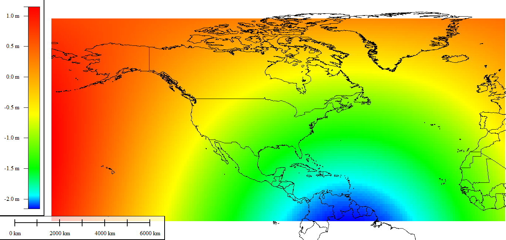For some cases, either datum is suitable. But strictly speaking, a local datum will provide a more accurate representation if you are dealing with a small area like a city or province. For global scale analysis, you always want a global datum.
Geographic Coordinate System (GCS)
Spherical Coordinate System for identifying locations on the spheroid.
-All GCS are tied to a specific datum.
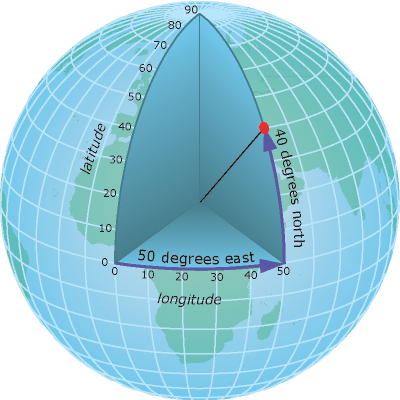
Latitude/Longitude
Degrees of latitude and longitude are defined by their angle from the center of the spheroid.
Latitude
Distance form Equator: -90 to +90 degrees
Longitude
Distance form Prime Meridian: -180 to +180 degrees
Longitude
Distance covered by one degree of longitude varies based on latitude (distance from equator).
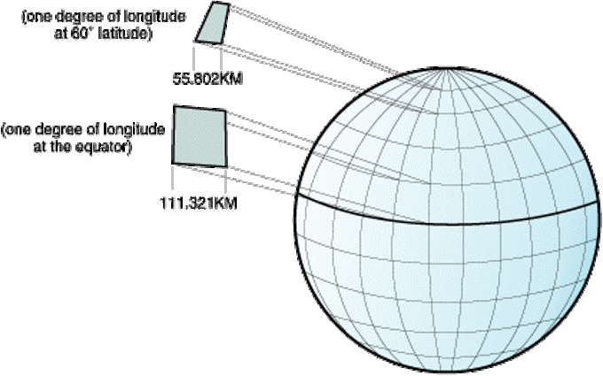
Projecting a GCS
Once we have a GCS, we can project it onto a 2D plane.
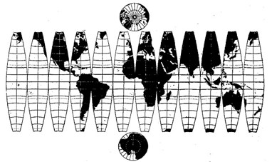
Projected Coordinate Systems
A projection is just a flattened GCS. Imagine sending rays of light through the ellipsoid onto a flat surface, that resulting image is a projection.
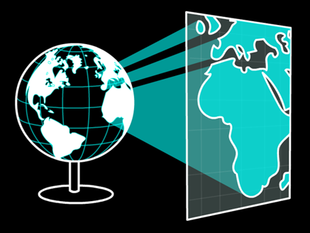